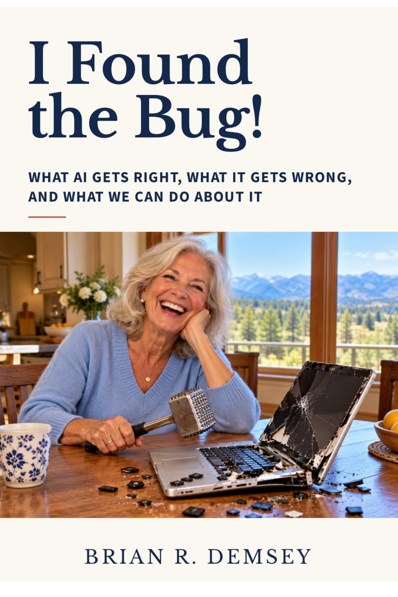

Jessica, Jessica Jessica -
I FOUND THE BUG
Key Points
- companies are pouring money into ai security; Bank of America alone is hiring 1,000 contractors to patch its software
- Palo Alto Networks' quarterly revenue rose 34% to $3.41 billion
- Americans over 60 reported more than $7.7 billion in internet crime losses in 2025, an average of more than $38,000 each
- the federal answer so far is a senate hearing and a handful of bills
- the bug: the people losing the most money have nobody on guard for them
I just loved the article "AI-Found Bugs." Companies have deep pockets and passionately read The Information.
My pocket is quite shallow but not my mind.
And I have been a subscriber for quite some time and a passionate contributor to The Forum. At least 20 posts. I'm 84, not exactly your demographic. I play pickleball almost every day but that did not qualify to attend your annual soiree.
So let me tell you what I found in that story.
Aaron Holmes reported that corporate America is on a cybersecurity spending spree. AI models are finding software flaws faster than companies can patch them. Bank of America is hiring 1,000 contractors to patch its software. Goldman Sachs may soon spend as much on AI for security as it spends on AI for writing code. A major energy company pulled next year's security budget forward to buy AI that watches its systems around the clock. One startup CEO summed it up: "nobody's ready."
He is right. But he was talking about companies. I want to talk about the rest of us.
Follow The Money
The vendors are doing fine. Palo Alto Networks, the largest standalone cybersecurity company, reported $3.41 billion in revenue for the quarter that ended July 31, up 34% from a year earlier. One software company told your reporter it pays about $25,000 to scan a single code repository with Anthropic's Mythos model. It has hundreds of them.
I do not begrudge any of it. When a bank's software is broken, my money is at risk too. But notice who is being protected. The code. The servers. The shareholders.
Now Follow Ours
In 2025, Americans over 60 filed more than 201,000 complaints with the FBI's Internet Crime Complaint Center and reported more than $7.7 billion in losses. Losses rose 59% in one year. The average victim lost more than $38,000. At least 12,400 of us lost $100,000 or more.
For the first time, the FBI's annual report gave AI-enabled fraud its own section: 22,364 complaints and nearly $893 million lost. The bureau describes criminals using cloned voices and believable videos of public figures and loved ones. That is the same technology the banks are buying to defend themselves.
The criminals are pointing it at your readers' grandparents.
And most of us are not equipped to fight back. Pew Research Center found in February that only 23% of Americans 65 and older have ever used an AI chatbot. Only 6% feel very confident using one. You cannot spot a fake you have never seen.
What We Got Instead
On July 29, the Senate Special Committee on Aging held a hearing called "The AI Deception Machine." Victims testified. Senators pointed to their bills: one to build a national strategy against scams, one to require chatbots to say they are not human, and one to create a single website for reporting fraud. Right now, fraud reports are scattered across 13 different agencies.
Those are reasonable ideas. None of them hires anybody. None of them watches my phone at two in the morning when a voice that sounds exactly like a grandchild says he is in jail and needs bail money. A bank gets 1,000 contractors. I get a hearing.
What An Older Person's Security Budget Would Buy
I spent decades as an actuary, and I use AI every day. I am not asking for a handout. I am asking the industry to point a fraction of this money at the people who are actually losing it.
- A scam checker anyone can use. Forward a suspicious text or email to a free service and get a plain answer: real or fake, and why. The AI that flagged more than 37,000 software flaws in a month can read one message from "the IRS."
- Banks that call before the money leaves. A 78-year-old who has never wired money in her life suddenly sends $40,000 in gift cards or crypto. That is a pattern a bank's AI can catch, the same way it catches attacks on its own servers.
- Plain-language help from the AI companies themselves. OpenAI and Anthropic are betting on security to drive their sales. They could spend some of it teaching older customers, in simple steps, how to tell their own product from a criminal using it.
- One habit for every family. Agree on a code word. If a loved one calls asking for money and cannot say it, hang up and call back on the number you already have. The FBI recommends exactly this, and it costs nothing.
Corporate defenders, as one security executive told your reporter, "have more money." They do. We have more to lose. And we read The Information too.
"I Found The Bug." Purchasable, you know where - buy a copy for your parents.
Who should pay to protect older Americans from AI-powered scams?
- The AI companies
- The financial institutions
- The government
- Families, it's on us
A poll posted with this article in The Information Forum.